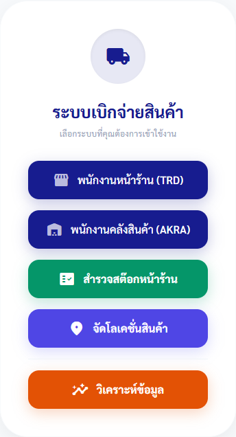
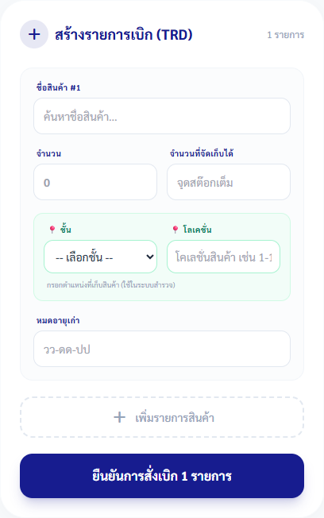
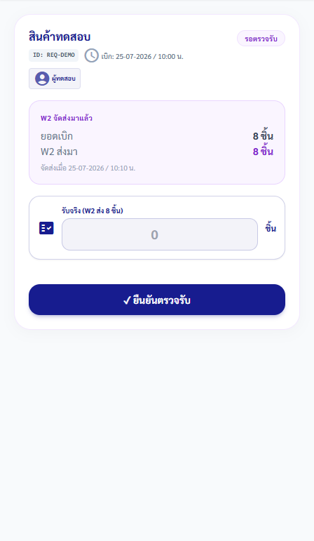
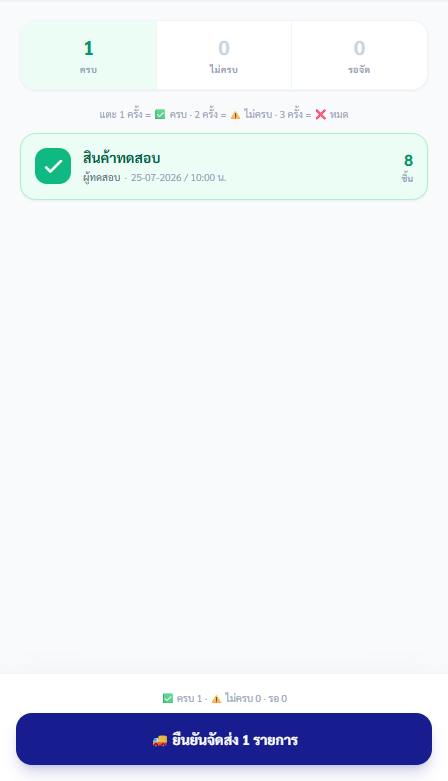
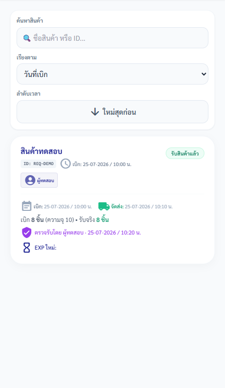
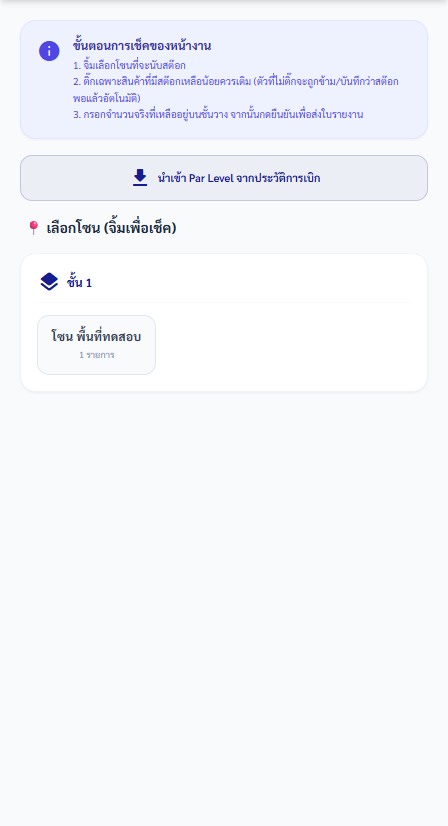
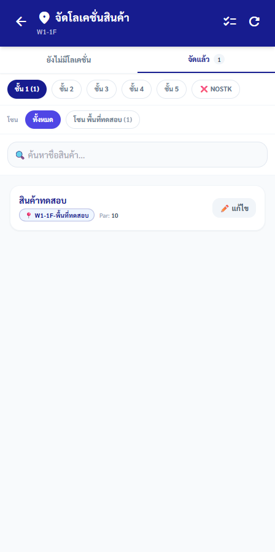

คู่มือพนักงาน · TRDAKRA — โอนย้ายสินค้าระหว่าง TRD และ AKRA
คู่มือเบิก จัดส่ง และตรวจรับสินค้า TRD–AKRA
ส่งคำขอจาก TRD ให้ AKRA จัดสินค้า และให้ TRD ตรวจรับยอดจริงจนปิดรายการได้โดยไม่เบิกซ้ำหรือข้ามการตรวจรับ
ฉบับทดสอบภายใน: ใช้ตรวจขั้นตอนและความเข้าใจก่อนประกาศใช้
ส่วนที่ 1
เตรียมก่อนเริ่ม
- เปิด TRDAKRA ผ่าน Main Portal และตรวจชื่อผู้ใช้บนหน้าจอ
- TRD เตรียมสินค้า จำนวน ความจุหรือตำแหน่ง และวันหมดอายุเก่าถ้ามี
- AKRA ตรวจของจริงก่อนระบุครบ ไม่ครบ หรือสินค้าหมด
- ห้ามทำรายการซ้ำเมื่อสินค้าชื่อเดียวกันมีคำขอค้างอยู่
เลือกเส้นทางจากข้อความที่เห็น
| ข้อความบนหน้าจอ | ความหมาย | ให้ทำต่อ |
|---|---|---|
| AKRA จัดได้ครบตามยอดเบิก | เส้นทางปกติ | แตะรายการหนึ่งครั้งให้เป็น “ครบ” แล้วกด “ยืนยันจัดส่ง” |
| AKRA จัดได้บางส่วน | ต้องบันทึกยอดที่ส่งจริง | แตะสองครั้งให้เป็น “ไม่ครบ” แล้วกรอกจำนวนที่ส่งได้จริงก่อนยืนยัน |
| AKRA ไม่มีสินค้าให้ส่ง | สถานะ “สินค้าหมด” ยังไม่ใช่สถานะสิ้นสุดถาวร | แตะสามครั้งให้เป็น “หมด”; เมื่อมีสินค้าเข้าให้ใช้ “กู้คืน” จากรายการเดิม ห้ามสร้างคำขอซ้ำ |
ส่วนที่ 2
ทำตามขั้นตอน
-
ทุกบทบาท
เลือกพื้นที่ทำงานตามฝั่ง
ทำ: เลือก “พนักงานหน้าร้าน (TRD)” สำหรับเบิก/รับ, “พนักงานคลังสินค้า (AKRA)” สำหรับจัดส่ง หรือเมนูสำรวจ/โลเคชั่น/วิเคราะห์ตามหน้าที่
เช็ก: หัวข้อหน้าจอระบุฝั่ง TRD หรือ AKRA ตรงกับงานที่จะทำ

เริ่มจากพื้นที่ทำงานที่ตรงกับฝั่งรับผิดชอบ ไม่สลับหน้าที่ TRD และ AKRA ภาพอ้างอิง TRDAKRA 20260704.02 -
พนักงานหน้าร้าน TRD
สร้างคำขอเบิก
ทำ: ใน “เบิกสินค้า” เลือกชื่อสินค้า ใส่จำนวน และกรอกความจุ ชั้น โลเคชั่น หรือวันหมดอายุเก่าที่ทราบ; เพิ่มรายการแล้วกด “ยืนยันการสั่งเบิก”
เช็ก: คำขอใหม่ขึ้นสถานะ “สั่งเบิก” ในแท็บ “รอรับ” พร้อมชื่อผู้เบิกและจำนวน

เลือกสินค้าจากรายการและกรอกยอดเบิกจริง ระบบกันรายการชื่อเดียวกันที่ยังค้างอยู่ ภาพอ้างอิง TRDAKRA 20260704.02 -
พนักงานหน้าร้าน TRD
ตรวจว่าคำขออยู่ในรอรับ
ทำ: เปิดแท็บ “รอรับ” และหาคำขอที่เพิ่งส่ง; ตรวจชื่อสินค้า จำนวน ผู้เบิก และสถานะ
เช็ก: พบรายการเดิมเพียงหนึ่งรายการใน “สั่งเบิก”, “กำลังจัดสินค้า” หรือ “รอตรวจรับ”

รายการจะอยู่ใน “รอรับ” ระหว่างรอ AKRA จัดส่งและกลับมาให้ TRD ตรวจยอดจริง ภาพอ้างอิง TRDAKRA 20260704.02 -
พนักงานคลัง AKRA
ระบุผลจัดของและยืนยันจัดส่ง
ทำ: ใน “รอจัด” แตะรายการตามคำอธิบายบนจอ: 1 ครั้งครบ, 2 ครั้งไม่ครบ, 3 ครั้งหมด; กรอกยอดจริงเมื่อไม่ครบ แล้วกด “ยืนยันจัดส่ง”
เช็ก: รายการครบ/ไม่ครบเปลี่ยนเป็น “รอตรวจรับ”; รายการหมดอยู่แท็บ “สินค้าหมด”

ตรวจสรุปครบ ไม่ครบ และรอก่อนกดยืนยันจัดส่งทั้งชุด ภาพอ้างอิง TRDAKRA 20260704.02 -
พนักงานหน้าร้าน TRD
ตรวจรับยอดจริง
ทำ: เมื่อสถานะเป็น “รอตรวจรับ” ให้นับของจริง กรอก “รับจริง” ไม่เกินยอดที่ W2 ส่ง แล้วกด “ยืนยันตรวจรับ” หลังอ่านกล่องยืนยัน
เช็ก: รับครบขึ้น “รับสินค้าแล้ว”; รับน้อยกว่ายอดขอขึ้น “จัดส่งไม่ครบ” พร้อมยอดขาด
TRD เป็นผู้ยืนยันยอดรับจริงขั้นสุดท้าย และระบบไม่ให้กรอกเกินยอดที่ W2 ส่ง ภาพอ้างอิง TRDAKRA 20260704.02 -
TRD และ AKRA
ตรวจรายการที่ปิดในประวัติ
ทำ: เปิด “ประวัติ” ค้นหาสินค้าหรือ ID แล้วตรวจเวลาเบิก เวลา dispatch ยอดรับจริง สถานะ และผู้ตรวจรับ
เช็ก: รายการปิดแสดง “รับสินค้าแล้ว” หรือ “จัดส่งไม่ครบ” พร้อมข้อมูลส่งมอบที่ตรวจย้อนกลับได้

ใช้ประวัติยืนยันผลก่อนสร้างคำขอใหม่หรือสอบสวนยอดต่าง ภาพอ้างอิง TRDAKRA 20260704.02 -
ผู้สำรวจสต็อก TRD
สำรวจตามโซนและส่งคำขอเติม
ทำ: เปิด “สำรวจสต๊อกหน้าร้าน” เลือกโซน ติ๊กเฉพาะสินค้าที่ควรเติม กรอกยอดคงเหลือจริง และตรวจยอดสั่งเบิกก่อนยืนยัน
เช็ก: ผลสำรวจถูกบันทึก และระบบสร้างคำขอ “สั่งเบิก” เฉพาะรายการที่ไม่มีคำขอค้าง

สำรวจตามตำแหน่งจริง; การยืนยันสามารถสร้างคำขอเบิก จึงต้องตรวจรายการซ้ำก่อนส่ง ภาพอ้างอิง TRDAKRA 20260704.02 -
ผู้ดูแลตำแหน่งหรือผู้วิเคราะห์
ดูแลโลเคชั่นและใช้ Analytics
ทำ: ใช้ “จัดโลเคชั่นสินค้า” เพื่อค้นหาและแก้ตำแหน่ง/Par Level ตามผังจริง; ใช้ “วิเคราะห์ข้อมูล” และประวัติเพื่ออ่านแนวโน้มโดยไม่แก้รายการโอน
เช็ก: สินค้ามีชั้น โซน/Bin และ Par Level ที่ตรวจสอบได้; รายงานแสดงข้อมูลตามช่วงที่เลือก

แก้โลเคชั่นและ Par Level เมื่อได้รับมอบหมายและตรวจผังจริงแล้วเท่านั้น ภาพอ้างอิง TRDAKRA 20260704.02
ส่วนที่ 3
เช็กก่อนจบงาน
งานเสร็จเมื่อครบทั้ง 5 ข้อ
- คำขอหนึ่งรายการต่อสินค้าที่กำลังดำเนินการ ไม่มีรายการซ้ำค้าง
- AKRA ระบุครบ ไม่ครบ หรือหมดตามของจริง และยอดไม่ครบมีจำนวนที่ส่งจริง
- TRD ตรวจรับยอดจริงไม่เกินยอดที่ W2 ส่ง
- ประวัติแสดงเวลาเบิก จัดส่ง สถานะ และผู้ตรวจรับครบ
- สำรวจและโลเคชั่นอ้างอิงพื้นที่จริง ไม่ใช้ค่าเดา
ส่วนที่ 4
แก้ปัญหาที่พบบ่อย
เลือกข้อความที่ตรงกับหน้าจอ แล้วทำตามทีละข้อ
ระบบแจ้งว่ามีคำขอเบิกสินค้านี้ค้างอยู่แล้ว
- อย่าสร้างคำขอใหม่
- เปิด “รอรับ” และ “ประวัติ” ค้นหาสินค้าเดิม
- ทำรายการเดิมให้เสร็จหรือให้หัวหน้าตรวจสถานะก่อน
จัดได้ไม่ครบหรือสินค้าหมด
- กรณีไม่ครบ ให้เลือก “ไม่ครบ” และใส่ยอดที่ส่งจริง
- กรณีหมด ให้เลือก “หมด”
- เมื่อของเข้า ใช้ “กู้คืน” จากแท็บ “สินค้าหมด”; ห้ามสร้างคำขอซ้ำ
- “ล้างรายการหมดทั้งหมด” ย้ายรายการไปประวัติ ใช้เมื่อผู้รับผิดชอบยืนยันแล้วเท่านั้น
TRD รับจริงไม่ตรงยอดที่ W2 ส่ง
- นับของจริงซ้ำและตรวจชื่อสินค้า
- กรอกยอดรับจริงที่ไม่เกินยอด W2
- ระบบจะเก็บสถานะ “จัดส่งไม่ครบ” และยอดขาดไว้ในประวัติ
บันทึกไม่สำเร็จหรือไม่แน่ใจว่าบันทึกแล้ว
- อย่ากดซ้ำทันที
- รีเฟรชหนึ่งครั้งแล้วตรวจ “รอรับ”, “รอจัด” หรือ “ประวัติ”
- ถ้ายังไม่พบผล ให้แจ้งหัวหน้าพร้อมชื่อสินค้าและเวลาที่ทำรายการ
เห็นข้อความเวอร์ชันใหม่หรือ session หมดอายุ
- หยุดบันทึกและรีโหลดหรือเข้าใหม่ผ่าน Main Portal
- ตรวจรายการเดิมจากระบบล่าสุดก่อนทำต่อ
ต้องนำเข้า Par Level จากประวัติ แก้โลเคชั่นเป็นกลุ่ม หรือทดสอบรายงาน LINE
- หยุดและให้ผู้ดูแลที่ได้รับมอบหมายตรวจขอบเขตก่อน
- คำสั่งนำเข้า/แก้กลุ่มเปลี่ยนข้อมูลสินค้า ไม่ใช้เป็นขั้นตอนเบิกปกติ
- ห้ามใช้การส่งสรุปประจำวันจริงเป็นการทดสอบ
- ระบบแจ้งว่ามีคำขอเบิกสินค้านี้ค้างอยู่แล้ว
-
- อย่าสร้างคำขอใหม่
- เปิด “รอรับ” และ “ประวัติ” ค้นหาสินค้าเดิม
- ทำรายการเดิมให้เสร็จหรือให้หัวหน้าตรวจสถานะก่อน
- จัดได้ไม่ครบหรือสินค้าหมด
-
- กรณีไม่ครบ ให้เลือก “ไม่ครบ” และใส่ยอดที่ส่งจริง
- กรณีหมด ให้เลือก “หมด”
- เมื่อของเข้า ใช้ “กู้คืน” จากแท็บ “สินค้าหมด”; ห้ามสร้างคำขอซ้ำ
- “ล้างรายการหมดทั้งหมด” ย้ายรายการไปประวัติ ใช้เมื่อผู้รับผิดชอบยืนยันแล้วเท่านั้น
- TRD รับจริงไม่ตรงยอดที่ W2 ส่ง
-
- นับของจริงซ้ำและตรวจชื่อสินค้า
- กรอกยอดรับจริงที่ไม่เกินยอด W2
- ระบบจะเก็บสถานะ “จัดส่งไม่ครบ” และยอดขาดไว้ในประวัติ
- บันทึกไม่สำเร็จหรือไม่แน่ใจว่าบันทึกแล้ว
-
- อย่ากดซ้ำทันที
- รีเฟรชหนึ่งครั้งแล้วตรวจ “รอรับ”, “รอจัด” หรือ “ประวัติ”
- ถ้ายังไม่พบผล ให้แจ้งหัวหน้าพร้อมชื่อสินค้าและเวลาที่ทำรายการ
- เห็นข้อความเวอร์ชันใหม่หรือ session หมดอายุ
-
- หยุดบันทึกและรีโหลดหรือเข้าใหม่ผ่าน Main Portal
- ตรวจรายการเดิมจากระบบล่าสุดก่อนทำต่อ
- ต้องนำเข้า Par Level จากประวัติ แก้โลเคชั่นเป็นกลุ่ม หรือทดสอบรายงาน LINE
-
- หยุดและให้ผู้ดูแลที่ได้รับมอบหมายตรวจขอบเขตก่อน
- คำสั่งนำเข้า/แก้กลุ่มเปลี่ยนข้อมูลสินค้า ไม่ใช้เป็นขั้นตอนเบิกปกติ
- ห้ามใช้การส่งสรุปประจำวันจริงเป็นการทดสอบ
ส่วนที่ 5
หยุดและแจ้งหัวหน้าเมื่อ
- พบคำขอชื่อเดียวกันค้างแต่ไม่ทราบว่าเป็นงานล่าสุดหรือไม่
- ยอดของจริงมากกว่ายอด W2 ส่ง หรือระบุตัวสินค้าไม่ได้
- ต้องล้างสินค้าหมด แก้โลเคชั่น/Par Level เป็นกลุ่ม หรือนำเข้าค่าจากประวัติ
- สถานะไม่ชัดเจนหลังรีเฟรช หรือ session/เวอร์ชันไม่พร้อม